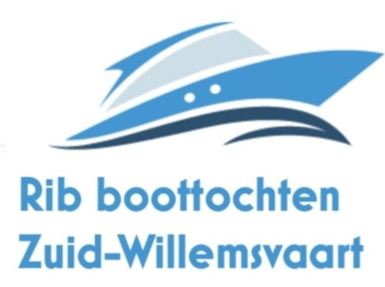

Boottochten Maasland

Over Boottochten Maasland
Boottochten Maasland is ideaal voor:
- Vaste snelvaart routes
- Privé tochten
- Huwelijksaanzoeken
- Vrijgezellen
- ...
Maximaal 7 personen, inclusief schipper.
Fles cava en plezier inbegrepen!